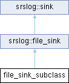

Inheritance diagram for file_sink_subclass:

Public Member Functions | |
| file_sink_subclass (std::string name, size_t max_size_) | |
| uint32_t | get_num_of_files () const |
 Public Member Functions inherited from srslog::file_sink Public Member Functions inherited from srslog::file_sink | |
| file_sink (std::string name, size_t max_size_, bool force_flush_, std::unique_ptr< log_formatter > f) | |
| file_sink (const file_sink &other)=delete | |
| file_sink & | operator= (const file_sink &other)=delete |
| detail::error_string | write (detail::memory_buffer buffer) override |
| Writes the provided memory buffer into the sink. | |
| detail::error_string | write_error (detail::memory_buffer input_buffer) override |
| Writes as an error the provided memory buffer into the sink. | |
| detail::error_string | flush () override |
| Flushes any buffered contents to the backing store. | |
| Public Member Functions inherited from srslog::sink | |
| sink (std::unique_ptr< log_formatter > f) | |
| log_formatter & | get_formatter () |
| Returns the formatter used by this sink. | |
| const log_formatter & | get_formatter () const |
Additional Inherited Members | |
| Protected Member Functions inherited from srslog::file_sink | |
| uint32_t | get_file_index () const |
| Returns the current file index. | |
Detailed Description
A Test-Specific Subclass of file_sink. This subclass provides public access to the data members of the parent class.
The documentation for this class was generated from the following file:
- tests/unittests/srslog/file_sink_test.cpp